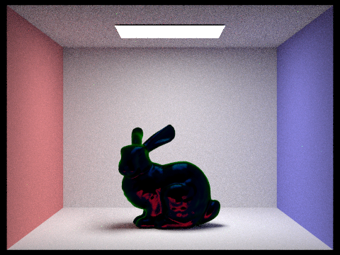
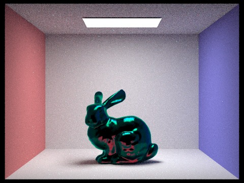
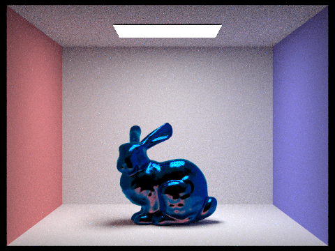
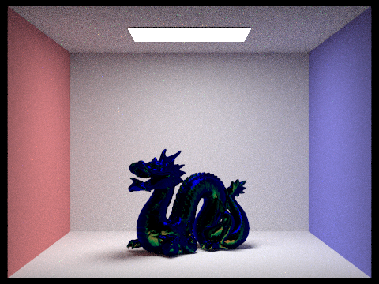

So far, we have done two main parts: the first part was refactoring the code to include information about wavelengths, and the second part was actually creating an iridescent material, which will be shown later. In the first part, we had to include wavelengths in our calculations because the main point of iridescence is that we need to rely on spectral light. In order to implement this, we need to sample wavelenths of Red, Green and Blue values (which we modelled as a normal distribution). For every sample, we used three separate normal distributions to represent the red green and blue lights, which we then modelled from normal distributions. We then got a sample from each distribution to model the specific wavelength for that sample. We then had to refactor all the code from projects 3-1 and 3-2 in order to account for the passing of these wavelengths to different functions.
The next step was to create a material with a thin film that would help us create the iridescent effect. We started out with the microfacet material code as a base here. The microfacet material relies on using the Fresnel term as part of the equation to determine the microfacet BSDF. In order to account for the thin film, we had to also edit the Fresnel term. This involved calculated the Fresnel term seperately for all of the 3 wavelengths (R, G, B corresponding) that we passed in. The first step was calculating the angles which the ray entered and left the thin film, and to do so, we calculated the refraction twice using the appropriate index of refraction in terms of the wavelength and the material. We then used the angles and the index of refraction of the air, the thin film, and the actual object. Using these values, we are able to calculate the reflection and transmission between the thin film and the material. We then accounted for phase changes, which had to take into the thickness of the material and the wavelength of the ray hitting the material. Using these values from the previous equations, we are able to calculate the value of the transmission. Using the transmission, we can find out the reflectance using the conservation of energy. Applying this to the red, green, and blue wavelengths passed in results in the iridescent effect.
Using the technique above, we were able to get the images below by varying the base material for the microfacet material, the thickness of the thin film, and the index of refraction of the thing film.
|  |  |
|  |  |
Although we have made siginificant progress on the project thus far, we have not stuck strictly to our original plan. As specified in the plan, we spent week 1 trying to gain better understanding of our project and refactoring our code. Unfortunately, we ran into significant problems during this portion. For exammple, we had a misunderstanding of how to account for the red, green, and blue wavelengths for each sample. This meant we had large errors before we started the project. As a result, our week 1 part took significantly longer than anticipated, eating into our week 2 work.
Once we completed the week 2 work, we further strayed from the plan. We were more eager to see the results of an iridescent microfacet material than to see how the current material accounted for a wavelength dependent BSDF. For this reason, we decided to skip ahead to implementing the iridescent materials and postpone working on the wavelength dependent BSDF functions. We were able to implement a fairly successful version of the iridescent microfacet material, resulting in the iridescent dragon and bunnies shown above. We had to try various methods before settling on the one that resulted in the above images. This also involved spending time gaining a better understanding of the role index of refraction of the material and the thickness of the thin film cause in the material.
We anticipate that we will still be able to implement most of our original plan despite these delays, but the order in which we plan on attempting these features has shifted slightly. We have already begun researching how we will utilize PerlinNoise in our iridescent microfacet material, which is one of the extras we had planned to implement in week 4. Our next step is to implement a soap bubble material by adding a thin film effect to a glass material. We will then implement wavelength-dependent BSDFs to some of the existing materials. We will then spend whatever time we have left working on some of the extras outlined in our project proposal.